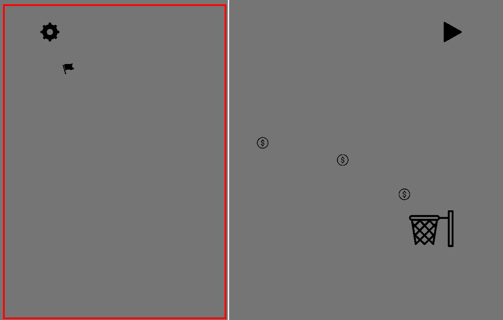
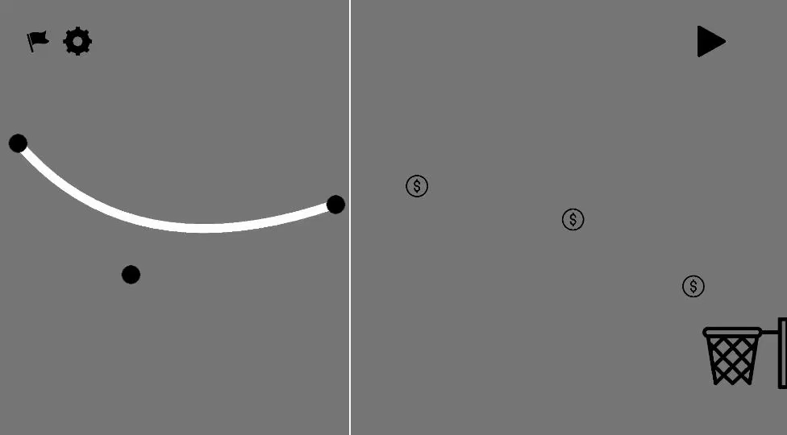

Manuale utente
Nota bene
Come verrà indicato nei prossimi paragrafi, il giocatore dovrà disporre di un dispositivo di puntamento(es: mouse, touchpad...) e una tastiera per interagire con il gioco.Le possibili interazioni che il giocatore può fare con il gioco sono le seguenti:
- Click singolo su bottoni visibili in gioco
- Click mantenuto con eventuali movimenti del cursore e rilascio
- Pressione mantenuta di 1 tasto della tastiera
- Click del pulsante sinistro del mouse, se si dispone di mouse tradizionali
- Click del pulsante sinistro del touchpad o del touchpad, se si dispone di touchpad
- Click del pulsante del mouse, se si dispone di mouse a singolo bottone
Elementi di gioco
In Spline Ramp il tuo scopo è quello di mandare a canestro una palla tramite una rampa; il gioco è
strutturato in 6 livelli caratterizzati dalla presenza di ostacoli fissi, mobili e altri elementi da sfruttare.
Prima di addentrarci nel menù costruzione che permette di costruire e/o modificare la rampa, analizziamo
i vari oggetti che si possono trovare nei livelli.
La palla
 La palla rappresenta il corpo che vogliamo mandare a canestro; il giocatore può decidere come lanciarla
tramite la rampa costruita.
La palla rappresenta il corpo che vogliamo mandare a canestro; il giocatore può decidere come lanciarla
tramite la rampa costruita.
La palla viene generata ogni volta che si avvia la simulazione; la simulazione genererà la palla in corrispondenza dell'icona della bandiera e, da quell'istante in poi,
cadrà per effetto della gravità.
Tuttavia, la velocità acquisita durante la caduta e la corsa sulla rampa non basterà a farle raggiungere il canestro;
ecco perché, il giocatore durante la simulazione, può imprimere velocità nella palla tenendo premuto
il pulsante 'a' della tastiera; l'accelerazione è costante e viene impressa lungo vettore velocità della
palla.
La velocità della palla continuerà a crescere, finché che il giocatore non rilascia il pulsante 'a'.
Il canestro
 Il canestro rappresenta l'obiettivo di gioco, dove bisogna mandare la palla.
Il canestro rappresenta l'obiettivo di gioco, dove bisogna mandare la palla.
Generalmente questo è fissato in una certa posizione che è diversa in tutti i livelli, fatta eccezione per uno in particolare, in cui si muove.
Coni stradali
 I coni stradali sono ostacoli mobili che seguono un percorso, posto tra la rampa e il canestro.
Ogni cono stradale segue un percorso prefissato, con una certa velocità e andatura.
I coni stradali sono ostacoli mobili che seguono un percorso, posto tra la rampa e il canestro.
Ogni cono stradale segue un percorso prefissato, con una certa velocità e andatura.
Se durante il viaggio della palla, questa colpisce un cono, verrà deviata e probabilmente non raggiungerà il
canestro.
Prima di lanciare la palla è importante seguire bene i loro movimenti.
Sono presenti in 4 dei 6 livelli proposti dal gioco.
Muri
Questi ostacoli sono rappresentati da dei rettangoli bianchi; per superarli, basta far si che la palla non li tocchi.
Sono presenti in 2 livelli: in uno, questo è fisso e non si muove, nell'altro invece ruota.
Materassi
 I materassi rappresentano un elemento di supporto al giocatore e fanno rimbalzare la palla al contatto.
I materassi rappresentano un elemento di supporto al giocatore e fanno rimbalzare la palla al contatto.
In certe situazioni non sarà possibile costruire rampe molto lunghe, per cui è importante sfruttarli al meglio.
Sono presenti in 2 livelli e sono sempre fissi.
Monete
 Le monete sono degli oggetti che si possono raccogliere in tutti i livelli; per raccogliere una moneta, basta
che la palla la tocchi.
Le monete sono degli oggetti che si possono raccogliere in tutti i livelli; per raccogliere una moneta, basta
che la palla la tocchi.
Le monete non sono ostacoli e non generano collisioni.
Ci sono 3 monete in tutti i livelli che si possono raccogliere e sono disposte in modo diverso; la
loro disposizione inoltre, suggerisce una possibile traiettoria che la palla può seguire per andare a canestro.
Se la palla fa canestro, il gioco controllerà il numero di monete raccolte durante la simulazione e, in base a questo numero,
visualizzerà un messaggio di vittoria diverso.
- 0 monete: "Puoi fare di meglio!"
- 1 monete: "Bravino!"
- 2 monete: "Bravo!"
- 3 monete: "Bravissimo!"
Menù costruzione
Dopo avere spiegato le cose che si possono trovare in Spline Ramp, vediamo come costruire effettivamente una
rampa.
Per creare o modificare una rampa bisogna accedere al menù costruzione, cliccando sull'ingranaggio nero
posizionato in alto a sinistra.
 Compariranno una serie di icone:
Compariranno una serie di icone:
Analizziamo le varie funzionalità.
Martello
Questo menù ci permette di costruire la rampa, qualora non ne avessimo creata nessuna; in ogni livello
il giocatore può creare al più una rampa.
Il menù che ci appare è composto da un bottone di conferma e un menù a tendina; il menù a tendina ci
permette di selezionare il tipo di rampa che possiamo creare.
Ci sono 4 tipologie di rampe:
- Segmentata
- Beziér
- Hermite
- BSpline
La rampa di Beziér è una rampa costruita lungo una curva di Beziér.
La rampa di Hermite è una rampa definita da una spline cubica di Hermite.
La rampa BSpline è una rampa che segue una b-spline cubica.
Per maggiori informazioni sulle implmentazioni di queste rampe, consultare la pagina di teoria.
Una volta scelta la rampa che vogliamo costruire, per definire i punti della rampa basterà cliccare sul lato sinistro dello schermo, delimitato da una linea bianca di confine; la regione indicata in rosso nell'immagine sottostante, rappresenta la porzione di spazio in cui si possono immettere i punti.  Dopo ogni click valido, appariranno dei punti neri in corrispondenza del cursore; l'ordine di immissione dei punti e la loro posizione verranno usati per definire il poligono di controllo della rampa.
Per ogni rampa, si possono definire al massimo 7 punti; se si immettono 7 punti, la rampa viene creata automaticamente.
Quando siamo soddisfatti della forma del poligono di controllo, possiamo confermare la struttura cliccando sul pulsante di conferma; così facendo, la rampa verrà creata sfruttando i punti specificati.
Per le rampe di Hermite è possibile cambiare le direzioni dei vettori tangenti, cliccando e tenendo premuto il cursore sopra uno di questi; il vettore si orienterà in direzione del cursore, finché non si rilascia.
Traslazione
 Questa funzionalità ci permette di traslare la rampa creata; per muovere la rampa sarà sufficiente cliccare e tenere premuto il cursore sulla rampa per trascinarla nella scena di gioco.
Questa funzionalità ci permette di traslare la rampa creata; per muovere la rampa sarà sufficiente cliccare e tenere premuto il cursore sulla rampa per trascinarla nella scena di gioco.
La rampa si muoverà seguendo il cursore, finché non si rilascia; per salvare i cambiamenti, cliccare sul bottone di conferma.
Cestino
 Questo bottone cancella la rampa attualmente in uso.
Questo bottone cancella la rampa attualmente in uso.
Rotazione
 Questa funzionalità ci permette di ruotare la rampa creata; cliccando e tenendo premuto l'indicatore di rotazione(che apparirà in prossimità della rampa), sarà possibile ruotare la rampa in riferimento alla posizione del cursore.
Questa funzionalità ci permette di ruotare la rampa creata; cliccando e tenendo premuto l'indicatore di rotazione(che apparirà in prossimità della rampa), sarà possibile ruotare la rampa in riferimento alla posizione del cursore.
La nuova orientazione si potrà confermare sempre con un click al bottone di conferma.
Modifica
 Questo menù consente di cambiare la posizione dei punti che definiscono la struttura della rampa esistente.
Questo menù consente di cambiare la posizione dei punti che definiscono la struttura della rampa esistente.
Per modificare la posizione di un punto bisogna cliccare e tenere premuto il cursore su uno di questi per trascinarlo nella scena di gioco; per
le spline cubiche di Hermite è possibile cambiare le direzioni dei vettori tangenti, in modo analogo alla fase di costruzione.
Per confermare le modifiche, cliccare sul bottone conferma.
E' bene precisare che non si possono aggiungere ulteriori punti di supporto, oltre a quelli già creati.
Qualora volessimo aggiungerne di nuovi, bisognerà cancellare la rampa e ricrearla.
Simulazione
Per testare se la rampa costruita è idonea allo scopo, si può avviare la simulazione,
cliccando sul pulsante "Play" nella parte in alto a destra della schermata di gioco.
Una volta fatto, la palla verrà generata a partire dall'icona della bandiera e da lì cadrà in basso, per effetto
della gravità.
Una buona rampa e i tempi giusti di accelerazione sono la chiave per mandare la palla a canestro.
Se la palla va a canestro, apparirà la schermata di vittoria che proporrà al giocatore di passare al livello successivo, oppure
ritentare il livello corrente.
